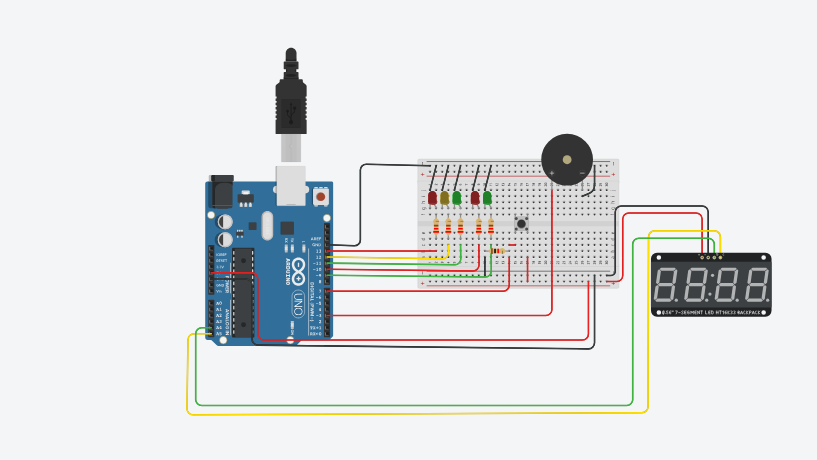

Professor Arisberto
Guilherme Albuquerque da Cunha Número: 13 Função: Montador
Vinícius Henrique Alves de Souza Número: 34 Função: Programador
Gustavo Bolsoni Santos Número: 15 Função: Relator
Alberto Herber de Lima Castagna Número: 2 Função: Conferente
Prática: Nós desenvolvemos um led com interruptor
Material Utilizado:
5 jumpers macho-macho
1 push button
1 led vermelho
2 resistores
arduino
protoboard
Conceitos importantes
Push button
Variáveis na programação
Condição "SE" na programação
Relato de observação: Alguns erros de montagem não permitiram o funcionamento correto da programação, porém com a orientação devida nós conseguimos contornar a situação e executar o programa corretamente.
Professor Arisberto
Guilherme Albuquerque da Cunha Número: 13 Função: Montador
Vinícius Henrique Alves de Souza Número: 34 Função: Programador/Relator
Gustavo Bolsoni Santos Número: 15 Função: Relator
Alberto Herber de Lima Castagna Número: 2 Função: Conferente
Prática: Semáforo com buzzer, display e push button
Material Utilizado:
19 jumpers macho-macho
4 jumpers macho-fêmea
1 push button
2 led vermelho
2 led verdes
1 led amarelo
5 resistores de 220W
1 resistor de 10kΩ
1 buzzer
1 display
Arduino
Protoboard
Algoritmo de montagem
Conectar cabo gnd no protoboard;
Conectar led vermelho na linha g1 do protoboard;
Conectar um jumper no lado negativo do protoboard ao j1;
Ligar o resistor de 220W do led com o jumper;
Conectar o jumper macho-macho ligado ao resistor, na linha f para linha d, para a entrada 13;
Conectar led amarelo na linha g3 do protoboard;
Conectar um jumper no lado negativo do protoboard ao j3;
Ligar um resistor de 220W do led com o jumper;
Conectar o jumper macho-macho ligado ao resistor, na linha f para linha d, para a entrada 12;
Conectar led verde na linha g5 do protoboard;
Conectar um jumper no lado negativo do protoboard ao j5;
Ligar o resistor de 220W do led com o jumper;
Conectar o jumper macho-macho ligado ao resistor, na linha f para linha d, para a entrada 11;
Conectar led vermelho na linha g8 do protoboard;
Conectar um jumper no lado negativo do protoboard ao j8;
Ligar o resistor de 220W do led com o jumper;
Conectar o jumper macho-macho ligado ao resistor, na linha f para linha d, para a entrada 10;
Conectar led verde na linha g10 do protoboard;
Conectar um jumper no lado negativo do protoboard ao j10;
Ligar o resistor de 220W do led com o jumper;
Conectar o jumper macho-macho ligado ao resistor, na linha f para linha d, para a entrada 9;
Conectar o display no arduino
Conectar dois jumpers do display; um na parte negativa e outro na parte positiva do protoboard;
Conectar um jumper na parte negativa do protoboard até a entrada gnd do arduino, interligando o display;
Conectar um jumper na parte positiva do protoboard até a entrada SV do arduino, interligando o display;
Conectar mais dois jumpers do display; um na porta A5 e outro na porta A4 do arduino;
Conectar buzzer no j21 e j26 no protoboard;
Conectar um jumper no i21 do protoboard à porta 3 do arduino;
Conectar um jumper no i26 do protobard ao lado negativo do protoboard;
Conectar push button no f15, f17, e15 e e17 no protoboard;
Conectar jumper do c15 ao c14;
Ligar resistor 10kΩ do b14 ao b10;
Conectar jumper do a14 à porta 7 do arduino;
Conectar jumper do a17 a parte positiva do protoboard;
Conectar jumper do a10 ao lado negativo do protoboard;
Conceitos importantes
Push button, buzzer, display e ordem dos semáforos
Programação
#include <Adafruit_LEDBackpack.h>
// C++ code
//
#define LED_VERMELHO 13
#define LED_VERDE 11
#define LED_AMARELO 12
#define LED_VERDE_PEDESTRE 9
#define LED_VERMELHO_PEDESTRE 10
#define BOTAO 7
#define BUZZER 6
bool button_state;
Adafruit_7segment led_display1 = Adafruit_7segment();
void setup()
{
led_display1.begin(112);
if (i == 700) {
digitalWrite (barra1, HIGH);}
if (i == 560) {
digitalWrite (barra2, HIGH);}
if (i == 420) {
digitalWrite (barra3, HIGH);}
if (i == 280) {
digitalWrite (barra4, HIGH);}
if (i == 140) {
digitalWrite (barra5, HIGH);}
if (i == 0) {
digitalWrite (barra5, LOW);
digitalWrite(barra4, LOW);
digitalWrite(barra3, LOW);
digitalWrite(barra2, LOW);
digitalWrite(barra1, LOW);}
//ligando os sinais
digitalWrite(LED_VERDE, HIGH);
digitalWrite(LED_VERMELHO_PEDESTRE, HIGH);
pinMode(LED_VERMELHO, OUTPUT);
pinMode(LED_VERDE, OUTPUT);
pinMode(LED_AMARELO, OUTPUT);
pinMode(LED_VERDE_PEDESTRE, OUTPUT);
pinMode(LED_VERMELHO_PEDESTRE, OUTPUT);
pinMode(BUZZER, OUTPUT);
pinMode(BOTAO, INPUT);
}
void loop()
{
//fazendo barulho
tone(BUZZER, 250, 150);
for(int i = 799; i >= 0; i--) {
if (i % 10 == 0) {
led_display1.println(i / 100);
led_display1.writeDisplay();
}
//ligando os sinais
digitalWrite(LED_VERDE, HIGH);
digitalWrite(LED_VERMELHO_PEDESTRE, HIGH);
button_state = digitalRead(BOTAO); //verifica se
//o botao foi
//apertado
//para o loop se o pedestre apertar o botao
if(button_state == true) {
break;
}
delay(10);
}
//fazendo barulho
tone(BUZZER, 100, 150);
for(int i = 2; i >= 0; i--) {
//mostrando o timer no led
led_display1.println(i);
led_display1.writeDisplay();
//desligando os sinais
digitalWrite(LED_VERDE, LOW);
//ligando os sinais
digitalWrite(LED_AMARELO, HIGH);
if (i == 2) {
digitalWrite (barra1, HIGH);
digitalWrite (barra2, HIGH);}
if (i == 1) {
digitalWrite (barra3, HIGH);
digitalWrite (barra4, HIGH);
digitalWrite (barra5, HIGH);}
if (i == 0) {
digitalWrite (barra5, LOW);
digitalWrite(barra4, LOW);
digitalWrite(barra3, LOW);
digitalWrite(barra2, LOW);
digitalWrite(barra1, LOW);}
//button_state = digitalRead(BOTAO);
delay(1000);
}
//fazendo barulho
tone(BUZZER, 200, 150);
for(int i = 7; i >= 0; i--) {
//mostrando o timer no led
led_display1.println(i);
led_display1.writeDisplay();
//desligando os sinais
digitalWrite(LED_AMARELO, LOW);
//ligando os sinais
digitalWrite(LED_VERMELHO_PEDESTRE, LOW);
digitalWrite(LED_VERMELHO, HIGH);
delay(1000);
digitalWrite(LED_VERDE_PEDESTRE, HIGH);
if (i == 7) {
digitalWrite (barra1, HIGH);}
if (i == 6) {
digitalWrite (barra2, HIGH);}
if (i == 5) {
digitalWrite (barra3, HIGH);}
if (i == 4) {
digitalWrite (barra4, HIGH);}
if (i == 2) {
digitalWrite (barra5, HIGH);}
if (i == 0) {
digitalWrite (barra5, LOW);
digitalWrite(barra4, LOW);
digitalWrite(barra3, LOW);
digitalWrite(barra2, LOW);
digitalWrite(barra1, LOW);}
//button_state = digitalRead(BOTAO);
delay(1000);
}
for(int i = 3; i >= 0; i--) {
//mostrando o timer no led
led_display1.println(i);
led_display1.writeDisplay();
//desligando os sinais
digitalWrite(LED_AMARELO, LOW);
//ligando os sinais
digitalWrite(LED_VERMELHO_PEDESTRE, LOW);
digitalWrite(LED_VERMELHO, HIGH);
delay(1000);
digitalWrite(LED_VERDE_PEDESTRE, HIGH);
//desligando
digitalWrite(LED_VERMELHO, LOW);
digitalWrite(LED_VERDE_PEDESTRE, LOW);
}
}
OBS IMPORTANTE: o código acima se aplica somente com o uso do display que está presente no tinkercad
OBS IMPORTANTE 2: o projeto do tinkercad tem a barra grapfica implementada2
Para usar e vizualizar a programação apropriada para o display que temos em salaO sistema de segurança deveria funcionar a partir de um sistema com 3 botões e um display para apresentar o sistema de senha requirido. Ao pressionar o primeiro botão a variável apresentada no display deve aumentar por um enquanto que ao pressionar o segundo botão a variável deve diminuir, representando os números de seleção da senha. O sistema deve incluir alguns leds para apresentar a quantidade já pressionada de digitos da senha. Após todos os digitos da senha serem escolhidos um led extra não anteriormente citado que deveria estar na cor verde deve mudar para um outro ao seu lado de cor vermelha simbolizando que a senha está completa. Agora, quando os botões forem pressionados, caso algum digito for acionado incorretamente um buzzer deve emitir um sinal sonoro para sinalizar que a senha está errada, ao mesmo tempo, um display deve servir para mostrar o tempo restante para colocar a senha, caso a senha não seja inserida até que o tempo acabe emitir um sinal sonoro. Se a senha for inserida corretamente emitir outro sinal.
Potenciômetro